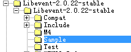

libevent中提供了一个Hello-world.c 的例子，从这个例子可以学习libevent是如何使用bufferevent的。
这个例子在Sample中

这个例子之前讲解过，这次主要看下bufferevent的使用。
第一步找到main函数
main函数
1 | int main(){ |
main函数中调用evconnlistener_new_bind()创建了一个evconnlistener 类型的listener,然后拍发消息，之后释放各种资源。
第二步在evconnlistener_new_bind()中调用evconnlistener_new()完成listener属性设置。
这个函数里对evconnlistener_event中base进行回调函数的绑定和参数设置，通过event_assign将evconnlistener_event的istener设置读事件的回调函数，并且通过evconnlistener_enable让读回调函数触发，也就是触发listener_read_cb。这里evconnlister_enable调用的也是结构体注册的enable具体看代码吧，调用的是r = lev->ops->enable(lev);等同于调用event_listener_enable，该函数内部完成event_add。
1 | struct evconnlistener_event { |
第三步listener_read_cb内部调用accept生成新的socket处理连接，调用listener_cb
新的socket作为参数传递给evconnlistener_event中base的回调函数listener_cb
1 | static void |
第四步listener_cb 调用bufferevent_socket_new 生成bufferevent，
然后bufferevent_setcb设置读写水位触发的回调函数，bufferevent_enable将bufferevent的写事件加入监听，即开始检测写事件。关闭读事件，并且向outbuf中写入MSG
bufferevent_socket_new内部绑定bufferevent的读写事件回调函数，读事件为bufev->ev_read，绑定了bufferevent_readcb回调函数，
写事件为bufev->ev_write，
绑定了bufferevent_writecb回调函数。这两个回调函数和bufferevent的readcb和writecb是不一样的，这两个函数在对应的读写事件激活时才触发。
而readcb和writecb是基于水位线达到阈值才会触发。做好区分。bufferevent_socket_new内部还对bufev->output添加了对调函数bufferevent_socket_outbuf_cb，
bufferevent_socket_outbuf_cb内部检测是否开启写事件，以及是否可写，如果可写，同样将写事件加入监听队列，也就是调用了event_add。
bufferevent_socket_new内部解释完毕了。bufferevent_setcb设置的是读写水位达到阈值后的回调函数，
bufferevent_enable内部也是调用了event_add，将读事件加入监听队列。
bufferevent_enable内部调用bufev->be_ops->enable(bufev, impl_events)，等同于be_socket_enable，另外bufferevent_write函数内部调用evbuffer_add，
evbuffer_add内部调用了evbuffer_invoke_callbacks，就会调用绑定在output buffer上的回调函数bufferevent_socket_outbuf_cb。
1 | static void |
1 | static int |
第五步 bufferevent的output中写入MSG， 并且之前也已经将EV_WRITE事件加入监听，所以内核检测到socket可写，会通知bufferevent的ev_write，调用绑定在ev_write上的函数bufferevent_writecb。
这是bufferevent内部的写操作，我们可以详细看一下。之前也有讲过bufferevent会将接收到的数据放到inputbuffer中，将outputbuffer中的数据发送。所以之前讲过的接口bufferevent_write让我们将要发送的数据放到output中，bufferevent_read可以从input中读出bufferevent接收到的数据。
1 | static void |
第六步：这个函数内部每次尽可能多的发送数据，
没有发送完就下次轮询继续发送,直到水位低于或等于写数据的低水位，那么就会触发bufferevent低水位写回调函数。也就是conn_writecb，
在conn_writecb内部检测output buffer中数据为空，就释放该bufferevent。
1 | static void |
这就是整体流程，bufferevent内部的流畅看懂即可，我们只需要使用libevent提供的接口即可。